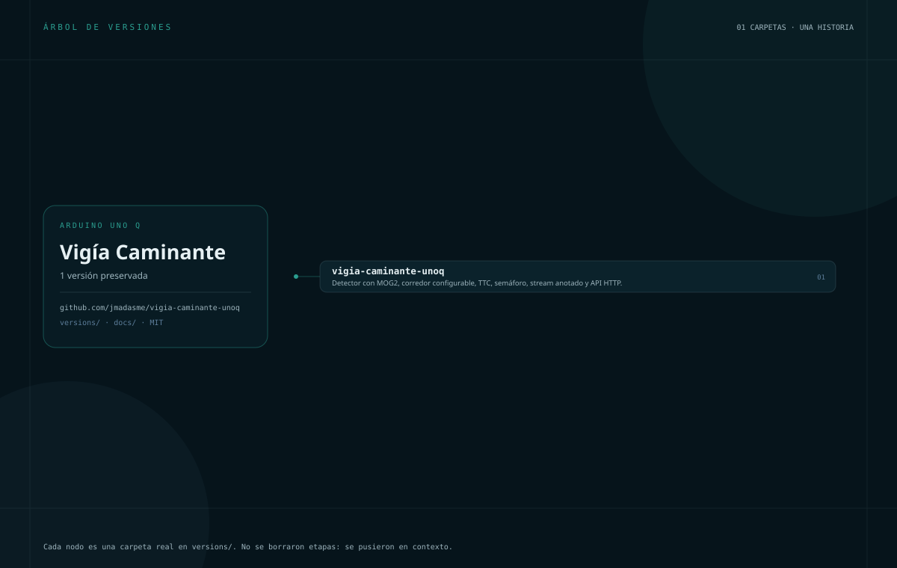
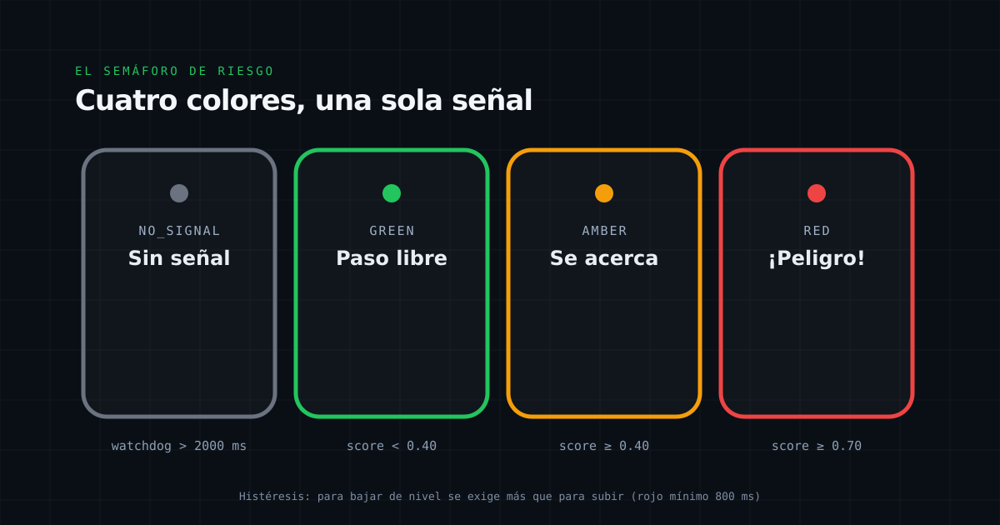

vigia-caminante-unoq
35 archivosDetector con MOG2, corredor configurable, TTC, semáforo, stream anotado y API HTTP.
Ver carpetaVigilancia de pasillo con una cámara IP: detecta peatones, estima el tiempo al contacto y publica un semáforo verde, ámbar o rojo.

Vigía Caminante es un servicio de visión que vigila un corredor central con una cámara IP y publica un semáforo de riesgo. Resta el fondo con MOG2, sigue el contorno dominante, estima el tiempo al contacto por el crecimiento del área y aplica histéresis sobre cuatro estados. La página muestra el stream anotado y una API HTTP permite consultar y ajustar umbrales sin reiniciar el servicio.
Está destinado a quienes necesitan una demostración comprensible de detección de aproximación en una placa con recursos limitados, no a un sistema de seguridad certificado. Su interés está en la trazabilidad: la bitácora registra trece hallazgos, tres auditorías y métricas sostenidas de 10,3 a 14 fps, con latencia mediana cercana a 55 ms. No identifica personas ni distingue quién se acerca; solo mide movimiento dentro de la franja configurada y declara sus límites.
Servicio de visión en la UNO Q que vigila el corredor central: resta fondo con MOG2, sigue los contornos que crecen, estima el tiempo al choque y publica un stream anotado con API de configuración.
Servicio de visión en la UNO Q que vigila el corredor central: resta fondo con MOG2, sigue los contornos que crecen, estima el tiempo al choque y publica un stream anotado con API de configuración.
Los fragmentos son del código real de versions/vigia-caminante-unoq. El sistema no identifica personas, no mide distancia métrica y no es un dispositivo de seguridad certificado.
Cada carpeta conserva una etapa del proyecto. No se borraron las anteriores: se pusieron en contexto.
Detector con MOG2, corredor configurable, TTC, semáforo, stream anotado y API HTTP.
Ver carpetaQué resuelve y por qué está construido así.
En una feria la gente camina mirando pantallas, no el piso. Un chico con un teléfono grabando puede cruzarse con otro visitante sin verlo. La pregunta no es «¿qué objetos hay?» sino «¿estoy a punto de chocar con algo?».
Un semáforo, no una lista: visión clásica (MOG2 + contornos + tracking) estima el riesgo de colisión frontal (cercanía, velocidad, looming, TTC) y lo reduce a un solo color en el borde de la pantalla. 100 % local y explicable en el stand.
Del frame del teléfono al color del borde.
Recibe frames MJPEG 1080×1920 del teléfono (IP Webcam) y los reduce a 320 px de ancho para analizar. El modo demo genera un caminante sintético para probar sin cámara.
MOG2 aprende la escena vacía y devuelve «lo que se movió»; cierre 7×7 + apertura 5×5 dejan contornos limpios, con un calentamiento de 5 frames al arrancar.
Área mínima 200 px y aspecto máximo 5:1. Un objeto que llena el cuadro no se filtra: es amenaza máxima por definición.
Asocia detecciones por IoU ≥ 0.3 y mantiene IDs persistentes con velocidad (vx/vy) y crecimiento de área (dA/dt, el «looming»).
Cinco pesos por objeto — cercanía 25 %, velocidad 20 %, looming 25 %, área 15 %, TTC 15 % — se combinan en un score 0..1.
El máximo score pasa por un EMA y una histéresis (800 ms de rojo mínimo) que decide el color del borde; se dibujan cajas, etiquetas y HUD sobre el stream.
Los componentes principales y cómo se conectan.

Android transmite MJPEG 1080×1920 por WiFi (192.168.1.9:8080). El hilo de captura reconecta con backoff si se corta.
ThreadingHTTPServer sirve la UI, /stream, /snapshot.jpg y la API JSON. Sin pip ni frameworks; no toca los puertos 8000/8010/8020.
MOG2 → contornos → tracker → score de 5 pesos → histéresis. Todo en un hilo que atrapa sus excepciones y sigue vivo.
Decisiones que hacen que el proyecto sea útil, mantenible y honesto.
MOG2 + contornos + tracking en CPU: sin pesos descargados, sin GPU, sin nube. Pesa menos de 1 MB y es explicable en el stand.
Cuatro umbrales + 800 ms de rojo mínimo: el borde no parpadea entre colores en cada frame, se mantiene estable y se lee de un vistazo.
El borde es la señal; el score, el TTC y las cajas explican por qué cambió de color. En una feria, poder decir «está abajo, crece y baja rápido» vale más que 2 puntos de precisión.
POST /api/config cambia modo, URL y umbrales sin reiniciar. El lote es atómico: si los umbrales quedan incoherentes responde 400 y no aplica nada.
Un caminante sintético recorre verde → ámbar → rojo → ámbar → verde en 10 s: sirve para verificar UI, overlay, stream e histéresis sin tocar la cámara real.
Watchdog de señal (frame_age > 2000 ms → gris) y cada hilo atrapa sus excepciones: un frame corrupto no tira el servicio de feria.
Sin «magia»: números reales tomados en la placa con el teléfono transmitiendo a 1080×1920.
fps de proceso 10.3 – 14.0
latencia mediana ≈ 55 ms
RSS 190 – 230 MB (≈6 % de 3.6 GB)
CPU 120 – 155 % de 400 %
320 px analizar · 540 px mostrar
JPEG calidad 70 · puerto 8030
Tecnologías y herramientas que sostienen el proyecto.
Arduino UNO Q Debian 13 Python 3.13 OpenCV NumPy MOG2 http.server unittest Sin pip ni frameworks web: stdlib + OpenCV + NumPy, ya preinstalados en el lado Linux (QCC711) de la UNO Q.
bash — vigia-caminante-unoq
# En la placa: estado del servicio y logs $ ./scripts/servicio.sh status # Despliega a la UNO Q por ssh (puerto 2222) $ ./scripts/desplegar.sh # Estado en vivo del semáforo $ curl -s http://192.168.1.5:8030/api/estado
Cada decisión, cada límite y cada comando están documentados en el repositorio. Sin folletos: lo que funciona se muestra, lo que no, también.
Qué es, cómo funciona, instalación y límites.
Operación paso a paso, calibración y problemas.
Módulos, hilos, fórmulas, API y extensión.
SSH, servicio, guardianes y checklist de feria.
Decisiones, tropiezos y lecciones aprendidas.
Todos los proyectos de la sección, con página y repo.
Las primeras versiones existen para que estos errores no se repitan: cada una dejó una decisión de diseño verificable.
El filtro descartaba los contornos con área relativa mayor a 0,7 para evitar falsos positivos, de modo que una persona muy cerca desaparecía del semáforo. Se dejó de descartar por tamaño, se fijó 0,95 como umbral de amenaza y se añadió un calentamiento de cinco frames para el arranque de MOG2.
La rutina de vigilancia leía, modificaba y volvía a escribir el estado, sobrescribiendo actualizaciones frescas y produciendo parpadeos grises. Se implementó una operación compare-and-set, reemplazar_estado_si, que solo escribe si la versión leída sigue siendo la vigente. Es la incidencia I-011 de la bitácora.
Las actualizaciones de ajustes desde la API podían intercalarse y dejar el estado con umbrales incoherentes entre sí. Se centralizó la escritura en actualizar_ajustes_si, con un único lock, y se agregó una prueba de ocho hilos sincronizados con Barrier. Es la incidencia I-013.
Se evaluó un detector neuronal, pero la placa no tiene GPU ni acelerador, el disco ronda los 768 MB y la CPU no alcanzaba 10 fps a 1080×1920. Se optó por MOG2 por ser explicable y sostenible. La limitación está documentada: el sistema detecta movimiento, no personas.
Seis criterios con la misma escala en todo el catálogo, para comparar sin marketing.
No. Detecta movimiento en el corredor y estima riesgo; no reconoce caras ni identidades.
Que algo crece en el corredor y el tiempo estimado al contacto bajó del primer umbral.
Analiza a 320 px y sostiene 10–14 fps en la placa con 190–230 MB de RSS.
Sí, si la cámara tiene visión nocturna; el detector necesita algún contraste para separar el fondo.
Usá esta familia como base para vigía caminante. Está documentada para que puedas entenderla, ejecutarla y continuarla sin adivinar.